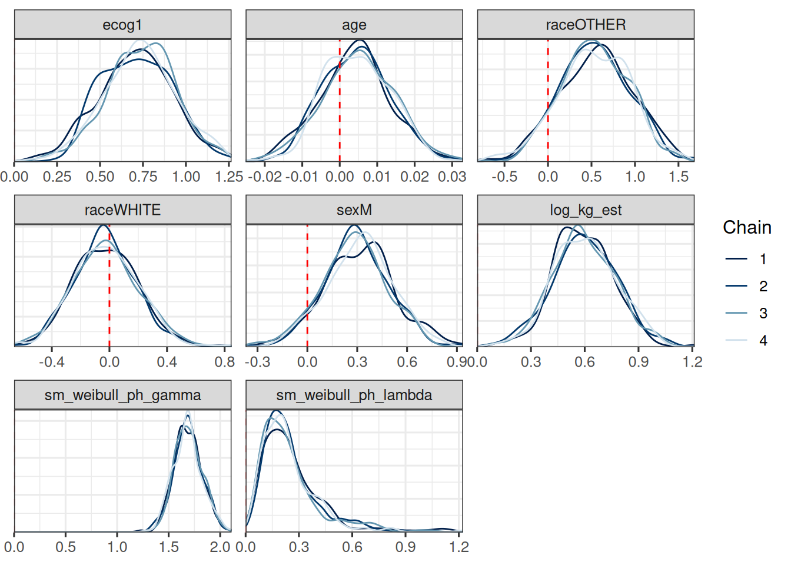

Show the code
subj_df <- os_data |>
mutate(study = "OAK") |>
select(study, id, arm)
subj_data <- DataSubject(
data = subj_df,
subject = "id",
arm = "arm",
study = "study"
)jmpostThe purpose of this document is to show a minimal workflow for fitting a Weibull OS model using the jmpost package.
Here we execute the R code from the setup and data preparation chapter, see the full code here.
Let’s use jmpost to fit the Stein-Fojo model to the TGI dataset. This works analogously to what we showed in the previous session.
First we again prepare the data objects, starting with the subject level data:
subj_df <- os_data |>
mutate(study = "OAK") |>
select(study, id, arm)
subj_data <- DataSubject(
data = subj_df,
subject = "id",
arm = "arm",
study = "study"
)Next we prepare the longitudinal data object.
long_df <- tumor_data |>
select(id, year, sld)
long_data <- DataLongitudinal(
data = long_df,
formula = sld ~ year
)Now we can create the JointData object for the TGI model:
tgi_joint_data <- DataJoint(
subject = subj_data,
longitudinal = long_data
)We specify the Stein-Fojo model together with the priors for the model parameters:
tgi_mod <- JointModel(
longitudinal = LongitudinalSteinFojo(
mu_bsld = prior_normal(log(65), 1),
mu_ks = prior_normal(log(0.52), 1),
mu_kg = prior_normal(log(1.04), 1),
omega_bsld = prior_normal(0, 3) |> set_limits(0, Inf),
omega_ks = prior_normal(0, 3) |> set_limits(0, Inf),
omega_kg = prior_normal(0, 3) |> set_limits(0, Inf),
sigma = prior_normal(0, 3) |> set_limits(0, Inf)
)
)Now we can fit the model:
save_file <- here("session-os/tgi1.rds")
if (file.exists(save_file)) {
tgi_results <- readRDS(save_file)
} else {
tgi_results <- sampleStanModel(
tgi_mod,
data = tgi_joint_data,
iter_sampling = ITER,
iter_warmup = WARMUP,
chains = CHAINS,
parallel_chains = CHAINS,
thin = CHAINS,
seed = BAYES.SEED,
refresh = REFRESH
)
saveObject(tgi_results, file = save_file)
}The function saveObject() was added to the package recently, please update your installation if it is not yet available.
Note that this is considerably faster than fitting the larger dataset of 701 patients. Let’s check the convergence of the population parameters:
vars <- c(
"lm_sf_mu_bsld",
"lm_sf_mu_ks",
"lm_sf_mu_kg",
"lm_sf_sigma",
"lm_sf_omega_bsld",
"lm_sf_omega_ks",
"lm_sf_omega_kg"
)
mcmc_tgi_results <- cmdstanr::as.CmdStanMCMC(tgi_results)
mcmc_tgi_results$summary(vars)# A tibble: 11 × 10
variable mean median sd mad q5 q95 rhat ess_bulk ess_tail
<chr> <dbl> <dbl> <dbl> <dbl> <dbl> <dbl> <dbl> <dbl> <dbl>
1 lm_sf_mu… 3.75 3.75 0.0375 0.0376 3.69 3.81 1.01 298. 572.
2 lm_sf_mu… -0.270 -0.255 0.298 0.308 -0.789 0.163 1.00 641. 680.
3 lm_sf_mu… -1.22 -1.16 0.360 0.343 -1.90 -0.708 0.999 723. 852.
4 lm_sf_mu… -0.731 -0.723 0.174 0.167 -1.02 -0.462 1.00 604. 762.
5 lm_sf_mu… -0.973 -0.969 0.157 0.150 -1.25 -0.728 1.00 641. 869.
6 lm_sf_si… 0.129 0.129 0.00381 0.00373 0.123 0.135 1.00 883. 892.
7 lm_sf_om… 0.531 0.529 0.0288 0.0294 0.486 0.583 1.00 518. 751.
8 lm_sf_om… 1.09 1.08 0.212 0.207 0.771 1.44 1.00 704. 861.
9 lm_sf_om… 1.45 1.42 0.271 0.251 1.07 1.95 0.999 731. 994.
10 lm_sf_om… 0.694 0.684 0.0963 0.0881 0.556 0.860 1.01 930. 904.
11 lm_sf_om… 0.994 0.983 0.103 0.100 0.840 1.17 1.01 762. 869.draws_tgi_results <- mcmc_tgi_results$draws(vars)
mcmc_trace(draws_tgi_results)So this looks good.
We can now extract the individual growth rate estimates from the model. Since the relevant random effect parameter samples are already stored in the mcmc_tgi_results object, we can directly extract the posterior means and credible intervals for the growth rates using the summary method. The only tricky part is that we need to match the IDs of the patients manually, because jmpost just numbers the patients in the order they appear in the data, which is then the index for all the random effects and individual growth parameters \(\psi_{\text{kg}, i}\).
subj_kg_est <- mcmc_tgi_results$summary("lm_sf_psi_kg") |>
mutate(id = subj_df$id)
head(subj_kg_est)# A tibble: 6 × 11
variable mean median sd mad q5 q95 rhat ess_bulk ess_tail id
<chr> <dbl> <dbl> <dbl> <dbl> <dbl> <dbl> <dbl> <dbl> <dbl> <fct>
1 lm_sf_psi… 0.514 0.446 0.349 0.397 0.0707 1.14 1.00 937. 1037. 588
2 lm_sf_psi… 0.479 0.354 0.400 0.287 0.0729 1.28 0.999 929. 731. 330
3 lm_sf_psi… 0.387 0.402 0.115 0.111 0.179 0.554 1.00 888. 717. 791
4 lm_sf_psi… 0.549 0.482 0.298 0.287 0.168 1.12 1.00 857. 950. 635
5 lm_sf_psi… 0.473 0.356 0.390 0.304 0.0729 1.24 1.01 976. 852. 365
6 lm_sf_psi… 0.307 0.251 0.213 0.198 0.0518 0.732 1.00 905. 915. 773 We now add the e.g. posterior mean estimate of the individual growth rates to the OS data set, such that we will be able to use it below as a covariate in the OS model:
os_data_with_kg_est <- os_data |>
select(id, arm, ecog, age, race, sex, os_time, os_event) |>
left_join(select(subj_kg_est, mean, id), by = "id") |>
rename(kg_est = mean)
head(os_data_with_kg_est)# A tibble: 6 × 9
id arm ecog age race sex os_time os_event kg_est
<fct> <fct> <fct> <dbl> <fct> <fct> <dbl> <lgl> <dbl>
1 588 Docetaxel 0 61 WHITE F 2.05 FALSE 0.514
2 330 MPDL3280A 1 56 WHITE F 1.68 FALSE 0.479
3 791 Docetaxel 0 72 WHITE F 0.901 TRUE 0.387
4 635 Docetaxel 0 42 OTHER F 1.66 TRUE 0.549
5 365 MPDL3280A 0 64 WHITE F 1.43 TRUE 0.473
6 773 Docetaxel 0 65 WHITE M 1.63 FALSE 0.307save_file <- here("session-os/os_data_with_kg.rds")
if (!file.exists(save_file)) {
saveRDS(os_data_with_kg_est, file = save_file)
}Now we can fit the OS model. We start by preparing the data objects.
surv_data <- DataSurvival(
data = os_data_with_kg_est,
formula = Surv(os_time, os_event) ~ arm + ecog + age + race + sex + kg_est
)Note that we are both including the treatment arm as well as the growth rate estimate here as covariates in the model, alongside the ECOG score, age, race and sex. The idea is that we want to understand whether there is additional information in the growth rate estimates, adjusting separately for the treatment arm.
Now we can create the JointData object for the OS model:
os_joint_data <- DataJoint(
subject = subj_data,
survival = surv_data
)We specify the Weibull model together with the priors for the model parameters. We take vague priors for the regression coefficients beta. For lambda and gamma, we start from the scale of the survival data at hand: the average survival time is 1.3 years, just taking a crude average of all survival times.
We can quickly write the function that gives the mean of the Weibull distribution with fixed lambda and gamma:
weibull_mean <- function(lambda, gamma) {
base::gamma(1 + 1 / gamma) / lambda
}Therefore, playing around with this a bit, we can e.g. center the prior for lambda around 0.7 and the prior for gamma around 1.5, giving a mean survival time of 1.3 years.
If we want to use Gamma distributions e.g. for lambda and gamma, we can use the prior_gamma function. The two parameters of this distribution are the shape and the rate. The mean is shape divided by the rate. So easiest is to keep a rate of 1 and just set the shape to the mean value we need:
os_mod <- JointModel(
survival = SurvivalWeibullPH(
lambda = prior_gamma(0.7, 1),
gamma = prior_gamma(1.5, 1),
beta = prior_normal(0, 20)
)
)Because we use a large prior variance for beta, we need to adjust the default initial value construction used in jmpost. As explained here, we can change the shrinkage of the initial values to the mean. We can then check what the initial values will be, to make sure that they are reasonable:
options("jmpost.prior_shrinkage" = 0.99)
initialValues(os_mod, n_chains = CHAINS)[[1]]
[[1]]$sm_weibull_ph_lambda
[1] 0.6972239
[[1]]$sm_weibull_ph_gamma
[1] 1.510107
[[1]]$beta_os_cov
[1] 0.3756408
[[2]]
[[2]]$sm_weibull_ph_lambda
[1] 0.7050865
[[2]]$sm_weibull_ph_gamma
[1] 1.493971
[[2]]$beta_os_cov
[1] -0.06619016
[[3]]
[[3]]$sm_weibull_ph_lambda
[1] 0.6978574
[[3]]$sm_weibull_ph_gamma
[1] 1.488545
[[3]]$beta_os_cov
[1] -0.07924588
[[4]]
[[4]]$sm_weibull_ph_lambda
[1] 0.7009439
[[4]]$sm_weibull_ph_gamma
[1] 1.509077
[[4]]$beta_os_cov
[1] 0.2440759Now we can fit the model:
save_file <- here("session-os/os1.rds")
if (file.exists(save_file)) {
os_results <- readRDS(save_file)
} else {
os_results <- sampleStanModel(
os_mod,
data = os_joint_data,
iter_sampling = ITER,
iter_warmup = WARMUP,
chains = CHAINS,
parallel_chains = CHAINS,
thin = CHAINS,
seed = BAYES.SEED,
refresh = REFRESH
)
saveObject(os_results, file = save_file)
}Note that here we can get warnings at the beginning of the chains’ sampling process (“The current Metropolis proposal is about to be rejected …”). As long as this only happens in the beginning, and not during the sampling later, then this is not a cause for concern.
Let’s check the convergence of the population parameters:
vars <- c(
"beta_os_cov",
"sm_weibull_ph_gamma",
"sm_weibull_ph_lambda"
)
mcmc_os_results <- cmdstanr::as.CmdStanMCMC(os_results)
mcmc_os_results$summary(vars)# A tibble: 9 × 10
variable mean median sd mad q5 q95 rhat ess_bulk
<chr> <dbl> <dbl> <dbl> <dbl> <dbl> <dbl> <dbl> <dbl>
1 beta_os_cov[… -0.346 -0.342 0.191 0.191 -0.667 -0.0394 1.01 990.
2 beta_os_cov[… 0.616 0.621 0.204 0.211 0.294 0.944 0.998 925.
3 beta_os_cov[… 0.00225 0.00196 0.00978 0.00913 -0.0135 0.0194 1.00 744.
4 beta_os_cov[… 0.508 0.509 0.409 0.402 -0.164 1.17 1.00 935.
5 beta_os_cov[… 0.0790 0.0741 0.231 0.224 -0.301 0.481 1.00 984.
6 beta_os_cov[… 0.282 0.278 0.209 0.212 -0.0738 0.622 0.998 903.
7 beta_os_cov[… 0.302 0.317 0.201 0.202 -0.0435 0.602 1.00 922.
8 sm_weibull_p… 1.66 1.67 0.139 0.143 1.43 1.90 1.00 1089.
9 sm_weibull_p… 0.176 0.145 0.126 0.0889 0.0484 0.419 1.00 740.
# ℹ 1 more variable: ess_tail <dbl>draws_os_results <- mcmc_os_results$draws(vars)
mcmc_trace(draws_os_results)
In order to better see which of the coefficients relate to which covariates, we can rename them as follows:
surv_data_design <- as_stan_list(surv_data)$os_cov_design
os_cov_names <- colnames(surv_data_design)
old_coef_names <- glue::glue("beta_os_cov[{seq_along(os_cov_names)}]")
draws_os_results <- do.call(
rename_variables,
c(list(draws_os_results), setNames(old_coef_names, os_cov_names))
)
mcmc_dens_overlay(draws_os_results) +
geom_vline(xintercept = 0, linetype = "dashed", color = "red")
summary(draws_os_results)# A tibble: 9 × 10
variable mean median sd mad q5 q95 rhat ess_bulk
<chr> <dbl> <dbl> <dbl> <dbl> <dbl> <dbl> <dbl> <dbl>
1 armMPDL3280A -0.346 -0.342 0.191 0.191 -0.667 -0.0394 1.01 990.
2 ecog1 0.616 0.621 0.204 0.211 0.294 0.944 0.998 925.
3 age 0.00225 0.00196 0.00978 0.00913 -0.0135 0.0194 1.00 744.
4 raceOTHER 0.508 0.509 0.409 0.402 -0.164 1.17 1.00 935.
5 raceWHITE 0.0790 0.0741 0.231 0.224 -0.301 0.481 1.00 984.
6 sexM 0.282 0.278 0.209 0.212 -0.0738 0.622 0.998 903.
7 kg_est 0.302 0.317 0.201 0.202 -0.0435 0.602 1.00 922.
8 sm_weibull_p… 1.66 1.67 0.139 0.143 1.43 1.90 1.00 1089.
9 sm_weibull_p… 0.176 0.145 0.126 0.0889 0.0484 0.419 1.00 740.
# ℹ 1 more variable: ess_tail <dbl>save_file <- here("session-os/os_draws.rds")
if (!file.exists(save_file)) {
saveRDS(draws_os_results, file = save_file)
}So we can see that the 90% credible interval (CI) for the covariates arm and ecog1 excludes 0, so these are “significant” predictors of the hazard rate. On the other hand, the race variable indicator and age variables’ CIs clearly include 0. The situation is less clear for sex and kg_est, the estimated growth rate: here the CIs barely include 0. The posterior probabilities for a hazard ratio above 1 are:
draws_os_results |>
as_draws_df() |>
select(sexM, kg_est) |>
summarise_all(~ mean(. > 0))Warning: Dropping 'draws_df' class as required metadata was removed.# A tibble: 1 × 2
sexM kg_est
<dbl> <dbl>
1 0.904 0.927So we have a more than 90% posterior probability that male patients have a higher hazard than females, and that patients with a higher estimated growth rate have a higher hazard than those with a lower growth rate - and this holds true even after adjusting for the treatment arm.
A useful plot displays the model predicted survival function and overlays the non-parametric Kaplan-Meier plot to it. Such a plot is easily obtained using the autoplot() function, as we will see below.
The first step consists in generating the survival predictions at the group level with the SurvivalQuantities() function. It is recommended to specify the sequence of time points at which the predictions should be made (using the argument times):
time_grid <- seq(from = 0, to = max(os_data_with_kg_est$os_time), length = 100)
os_surv_group_grid <- GridGrouped(
times = time_grid,
groups = with(
subj_df,
split(as.character(id), arm)
)
)
os_surv_pred <- SurvivalQuantities(
object = os_results,
grid = os_surv_group_grid,
type = "surv"
)Now we can use the autoplot() method:
autoplot(os_surv_pred, add_km = TRUE, add_wrap = FALSE)
Similarly to the survival function estimation, we can also estimate the hazard function by treatment group.
os_hazard_pred <- SurvivalQuantities(
object = os_results,
grid = os_surv_group_grid,
type = "haz"
)Also this can be plotted using the autoplot() method:
autoplot(os_hazard_pred, add_wrap = FALSE)
Finally, we can also estimate the hazard rate, which is constant over time here - because we use the Weibull proportional hazards model. We still show this more complicated code here because it will also work later for joint TGI-OS models, where the hazard rate is not constant any longer.
os_hr_est <- os_hazard_pred |>
as.data.frame() |>
group_by(group, time) |>
mutate(sample = row_number()) |>
pivot_wider(names_from = group, values_from = values) |>
mutate(hr = MPDL3280A / Docetaxel) |>
group_by(time) |>
summarize(
mean = mean(hr, na.rm = TRUE),
lower = quantile(hr, 0.05, na.rm = TRUE),
upper = quantile(hr, 0.95, na.rm = TRUE)
) |>
na.omit() # Omit the time = 0 which has NA
summary(os_hr_est) time mean lower upper
Min. :0.02276 Min. :0.7251 Min. :0.5166 Min. :0.9638
1st Qu.:0.58038 1st Qu.:0.7251 1st Qu.:0.5166 1st Qu.:0.9638
Median :1.13801 Median :0.7251 Median :0.5166 Median :0.9638
Mean :1.13801 Mean :0.7251 Mean :0.5166 Mean :0.9638
3rd Qu.:1.69563 3rd Qu.:0.7251 3rd Qu.:0.5166 3rd Qu.:0.9638
Max. :2.25325 Max. :0.7251 Max. :0.5166 Max. :0.9638 Now we can plot this:
ggplot(os_hr_est, aes(x = time, y = mean, ymin = lower, ymax = upper)) +
geom_line() +
geom_ribbon(alpha = 0.3)
Similar, but not identical numbers we can obtain here of course directly from the group covariate coefficient:
draws_os_results |>
mutate_variables(hr = exp(armMPDL3280A)) |>
subset(variable = "hr") |>
summary()# A tibble: 1 × 10
variable mean median sd mad q5 q95 rhat ess_bulk ess_tail
<chr> <dbl> <dbl> <dbl> <dbl> <dbl> <dbl> <dbl> <dbl> <dbl>
1 hr 0.720 0.710 0.138 0.136 0.513 0.961 1.01 990. 789.The difference is due to the fact that the other covariates are ignored here by this simpler calculation.
We can use the Brier score to compare two different survival models. The Brier score is a measure of the mean squared difference between the predicted survival probability and the actual survival status. The lower the Brier score, the better the model.
To calculate it, we need to use the GridFixed input for SurvivalQuantities():
os_fixed_surv <- SurvivalQuantities(
object = os_results,
grid = GridFixed(times = time_grid),
type = "surv"
)
# Current workaround if we have a logical event indicator:
os_fixed_surv@data@survival@data$os_event <- as.numeric(
os_fixed_surv@data@survival@data$os_event
)
os_mod1_bs <- brierScore(os_fixed_surv)We can also look at the LOOIC. As for the TGI model, we can use the loo() method in the CmdStanMCMC object to calculate it:
os_mod1_looic <- mcmc_os_results$loo(r_eff = FALSE)Now suppose we have a second model, where we omit the kg_est covariate. We can fit this model, just by omitting the kg_est covariate in the formula of the DataSurvival construction:
surv_data2 <- DataSurvival(
data = os_data_with_kg_est,
formula = update(surv_data@formula, . ~ . - kg_est)
)
os_joint_data2 <- DataJoint(
subject = subj_data,
survival = surv_data2
)
save_file <- here("session-os/os2.rds")
if (file.exists(save_file)) {
os_results2 <- readRDS(save_file)
} else {
os_results2 <- sampleStanModel(
os_mod,
data = os_joint_data2,
iter_sampling = ITER,
iter_warmup = WARMUP,
chains = CHAINS,
parallel_chains = CHAINS,
thin = CHAINS,
seed = BAYES.SEED,
refresh = REFRESH
)
saveObject(os_results2, file = save_file)
}
mcmc_os_results2 <- cmdstanr::as.CmdStanMCMC(os_results2)Then we can calculate the Brier score and LOOIC as well:
os_fixed_surv2 <- SurvivalQuantities(
object = os_results2,
grid = GridFixed(times = time_grid),
type = "surv"
)
# Current workaround if we have a logical event indicator:
os_fixed_surv2@data@survival@data$os_event <- as.numeric(
os_fixed_surv2@data@survival@data$os_event
)
os_mod2_bs <- brierScore(os_fixed_surv2)
os_mod2_looic <- mcmc_os_results2$loo(r_eff = FALSE)Now we can compare the two models:
os_mod1_looic
Computed from 1000 by 203 log-likelihood matrix.
Estimate SE
elpd_loo -192.9 5.7
p_loo 9.6 0.8
looic 385.7 11.5
------
MCSE of elpd_loo is 0.1.
MCSE and ESS estimates assume independent draws (r_eff=1).
All Pareto k estimates are good (k < 0.67).
See help('pareto-k-diagnostic') for details.os_mod2_looic
Computed from 1000 by 203 log-likelihood matrix.
Estimate SE
elpd_loo -193.3 5.6
p_loo 8.6 0.7
looic 386.6 11.2
------
MCSE of elpd_loo is 0.1.
MCSE and ESS estimates assume independent draws (r_eff=1).
All Pareto k estimates are good (k < 0.67).
See help('pareto-k-diagnostic') for details.loo_compare(os_mod1_looic, os_mod2_looic) elpd_diff se_diff
model1 0.0 0.0
model2 -0.4 1.4 So we see that according to the LOOIC, the model with the kg_est covariate is slightly better than the model without it. However, the difference is small, and considering the difference in the expected log pointwise predictive density (ELPD) is small compared to the standard error, the improvement is not significant.
We can plot the Brier scores:
data.frame(
time = time_grid,
brier_score_diff = os_mod1_bs - os_mod2_bs
) |>
ggplot(aes(x = time, y = brier_score_diff)) +
geom_line() +
labs(y = "Brier score difference (1 - 2)") +
geom_hline(yintercept = 0, linetype = "dashed", color = "red")
Also here we can see that the differences are very small, but for most time points the model with kg_est is slightly better than the one without (because lower numbers are better and we looked at the difference model 1 minus model 2 scores).